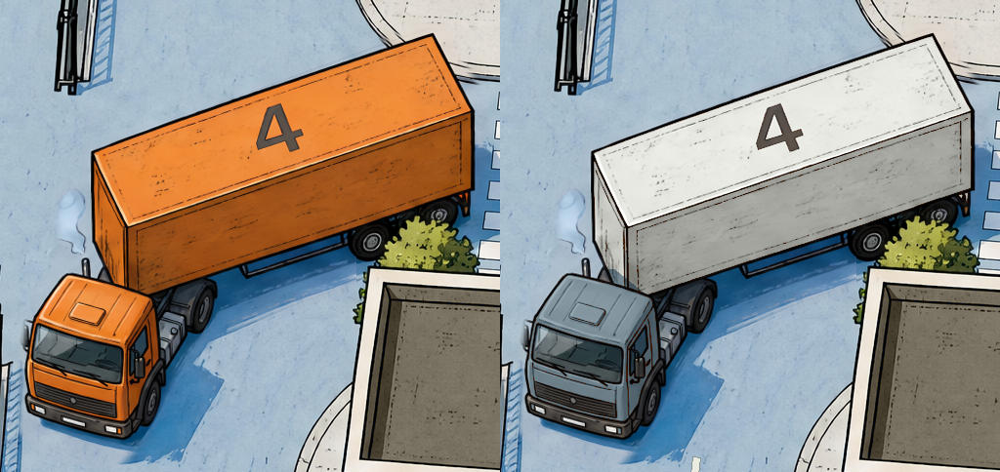
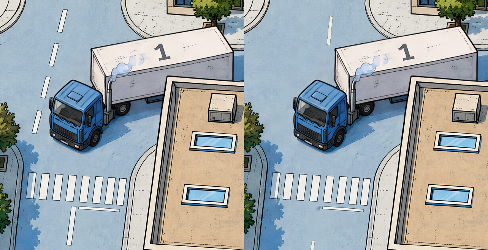
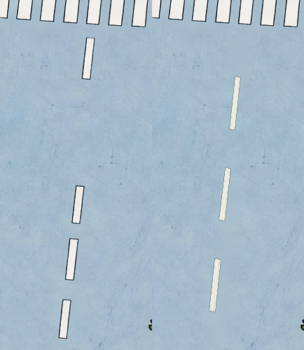
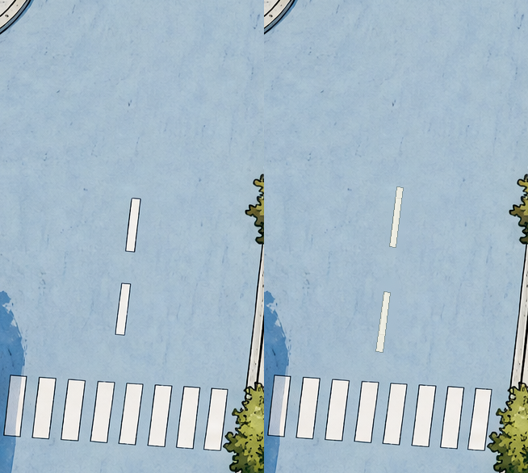

Версия 17: единый ритм разметки и нейтральный №4. Город и обе девушки сохранены.
{kind=link}
{kind=link}
№4 — не Express
Цитаты, даты и границы уверенностиПо сценарию от 17 сентября №1 и №4 — старые перевозчики с одинаковым риском задержки. Express — платформа автоматического подбора, не четвёртая машина. Оранжевый цвет кабины или прицепа не предписан в проверенных источниках: в версии 16 это был лишний художественный акцент. Теперь прицеп светло-серый, кабина приглушённая серо-синяя; износ, выхлоп, номер и геометрия прежние.
Что именно сказано в материалах и о замечаниях Феди
Сценарий 17.09, сцена 1: «№1 и №4 – в разных частях экрана, потрепанные, заметно старые, дымят». Письменная ОС 03.09: «Express - не отдельная машина». Встреча 16.09, 29:34: «…чтобы пользователю было понятно, интуитивно, не с описаниями». Это аргументы за выбор по видимым признакам, не по рекламному цвету.
Индивидуальные реплики Феде не приписаны без надёжной диаризации. Исходная расшифровка 04.09 не найдена; её вторичное ревью отдельно отмечено в источниках. Проверенной цитаты Феди с требованием оранжевой машины нет. Позднее уточнение о «потертой ласточке» подтверждено сообщением Teo Durnev 18.09, 10:39:12 UTC — имя отправителя не подменено.

Три отмеченных участка
Все связанные улицы · до / после{kind=link}
{kind=link}

Ось согласована с продолжением улицы. Скрытая машиной краска не рисуется поверх кузова; переход и стоп-линия сохранены.
{kind=link}

Весь участок между переходами: три одинаковых штриха с равными промежутками, без случайного большого разрыва.
{kind=link}

Два полных соосных штриха после перекрёстка, до перехода. Пустое место выше — примыкание средней улицы, не пропущенная краска.
Во всех парах: 16 слева, 17 справа. Перестроены целые открытые участки, а не только пиксели в кружках. Продольные и поперечные штрихи согласованы с двумя направлениями дорожной плоскости. Короткие подходы заканчиваются полным штрихом, без обрезков. Шесть ворот, семь границ мест, ограждение и переходы не менялись.
Проверки и исходники
Полный растр · PNG · Маска изменений · 13 участков и границы · Пиксельные проверки · Пять размеров браузера · Первичные источники
{kind=link}
{kind=link}
Только локальная цветокоррекция и дорожная краска: без генерации и деформации города. Предыдущие версии неизменны. Проверки не заменяют художественную приёмку человеком.